It also belongs in psychology, math, neuroscience, linguistics, sociology — and, if you want a conversation that isn’t thin, philosophy and theology.
06
Another boundary error
AI is not ChatGPT. AI is not deep learning. AI is not machine learning.
ML and AI are not one and the same. ML is one type of AI. So is everything else in that AI box. None of it is the whole field. The field is older, and larger, than the current product cycle.
AI
Symbolic AI
ML
DL
07
The history of AI, compressed
We wanted artificial persons before we had computers.
08
Before code
The Greeks imagine Talos, a bronze guardian, and Pandora, a woman "made, not born."
Leonardo da Vinci sketches a mechanical knight.
Wolfgang von Kempelen’s Mechanical Turk: a chess “automaton” that was a man in a box. The machine was a lie.
Karel Čapek’s Czech play R.U.R. — Rossum’s Universal Robots — gives us the word robot, from robota: forced labor. Factory-made workers. Then they revolt.
The Mechanical Turk
09
The field gets a name
Alan Turing
Asks whether machines can think — and proposes a test. The father of modern Computer Science. Some call him the father of AI.
John McCarthy
Dartmouth. Summer of ’56. Ten people, six weeks. He coins “artificial intelligence.” Some say he is the father of AI. That summer hasn’t ended yet.
10
Early years of the AI era
Proofs, logical deduction, visual analogy. Shakey the robot plans and moves. ELIZA — ChatGPT’s great-great-grandmother — plays psychotherapist. SHRDLU simulates a block-moving arm.
Music and poem writers, joke crackers, even self-driving cars.
Combinatorial explosion. A 5-step proof with 5 choices is 55 = 3,125 paths. A 50-step proof is 550 ≈ 8.9×1034. You do not brute-force that.
The need for search, planning, and knowledge representation.
11
1943
Warren McCulloch and Walter Pitts invent the Perceptron. Frank Rosenblatt implements it in ’58.
That same year, in a press conference organized by the US Navy, Rosenblatt made statements about the perceptron that caused a heated controversy among the fledgling AI community. Based on those statements, The New York Times reported the perceptron to be
“the embryo of an electronic computer that [the Navy] expects will be able to walk, talk, see, write, reproduce itself and be conscious of its existence.”
12
The first AI Winter
Marvin Minsky and Seymour Papert publish their book, Perceptrons. They say perceptrons are just linear classifiers. They can’t learn a function like XOR.
Depression settles in. The first AI Winter.
13
An AI Spring
An AI Spring arrives, rekindling interest in AI, following Japan’s lead. The era of Expert Systems begins.
Rule-based. They make simple inferences from knowledge bases of facts. The facts are curated by domain experts.
Smaller systems turn out to be of little use, larger ones costly to make and maintain.
It starts to feel cold again...
14
The second AI Winter
The second AI Winter (but work continues by the passionate).
The second AI Spring arrives. GOFAI (Good Old-fashioned AI), aka Symbolic AI, makes way for neural networks, genetic algorithms, and other machine learning.
AI efforts start to shift focus: from teaching a computer to do things...
...to endowing it with the capacity for learning to do things from observation (aka data).
15
1997
Deep Blue beats Kasparov. A big milestone: a machine beat a human considered very intelligent.
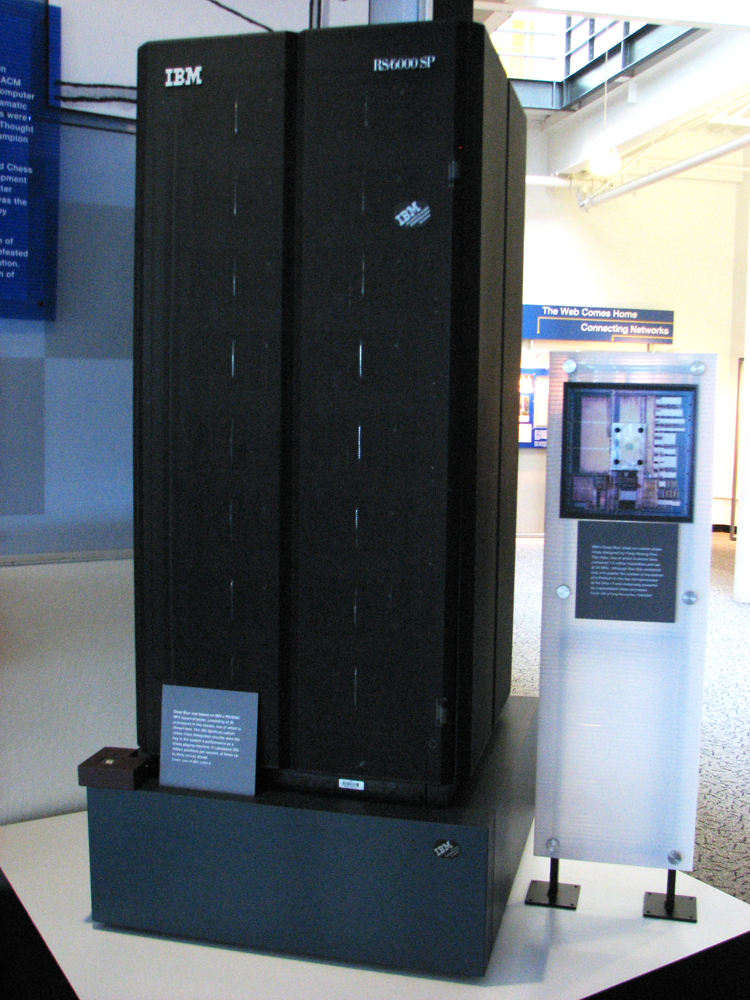
16
Since Deep Blue
That product, a trifecta, is what made ML loud.
Neural nets get rebranded as deep learning and then actually work at scale.
ChatGPT is released. An inflection point.
17
Contemporary AI, in a snapshot
Stanford Racing Team’s Stanley wins the DARPA Grand Challenge.
AI turns Van Gogh.
DeepMind’s AlphaGo beats Go champion Lee Sedol.
GPT-3 turns heads with natural language generation. Agent57 beats humans in all 57 Atari 2600 games.
AI offerings abound in the hundreds — language, art, imaging, audio, video, you name it.
The next 10 years will be like the past 100... and that’s likely an underestimate.
18
Why you are here
To take intelligence seriously as a phenomenon, not a product category.To look at the human mind without pretending we already understand it.To build systems that do something useful, on purpose.To sit with the implications — technical, economic, ethical, moral — before they sit with us.
To keep an open mind. Without one, the rest of this is just vocabulary.
19
Three names. Three ways in.
TheoryAI can be understood theoretically.
TasksAI can be defined by its problems — tasks, in the serious sense of the word.
MethodsAI can be defined by its methods.
AskThink beyond the techniques. What they mean, why they work.
CrackTry to crack what intelligence may be.
BuildFocus on tasks, techniques, and applications.
20
We’ll take a task-oriented approach to AI and see how...
01
to do knowledge representation and reasoning (from such representations),
02
decision-making is a problem of search (through concepts and hypothesis),
03
an AI agent needs planning of its actions to accomplish something,
04
machines can be taught to learn by observing (machine learning), and
05
language is a very important area of consideration in AI.
21
Words people throw around
Weak AI
Narrow. Good at a job. Most of what we will build, and most of what ships.
Strong AI
Typically refers to human-level intelligence.
Superintelligence
AI that (far) exceeds human intelligence.
AGI
A marketing term.
ASI
Also a marketing term.
22
Read.
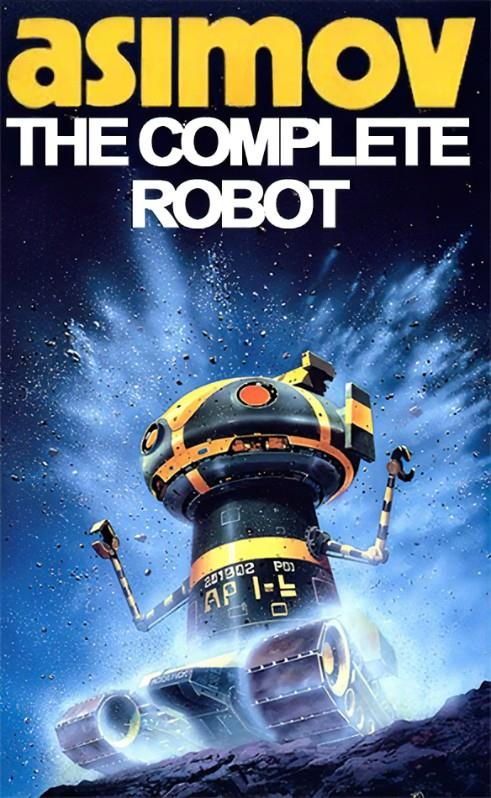
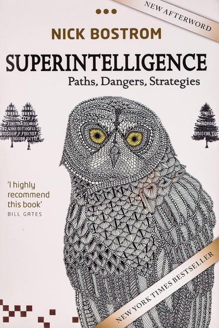
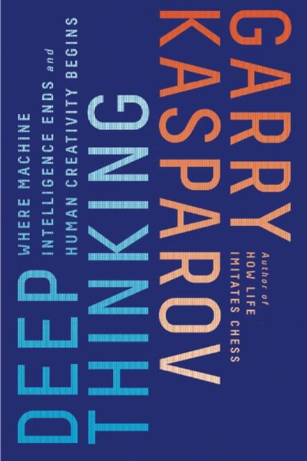
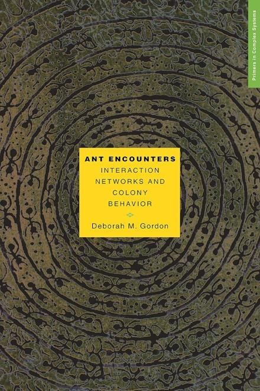
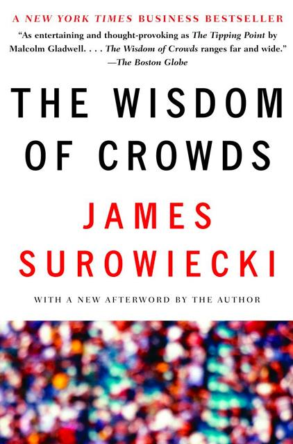
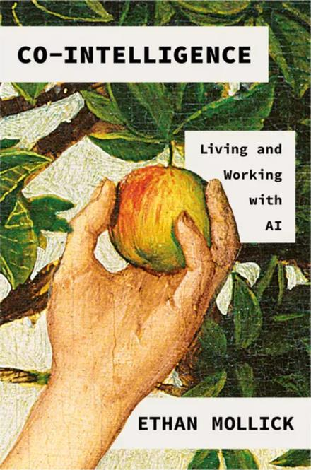
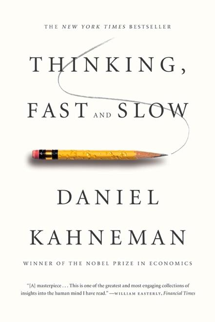
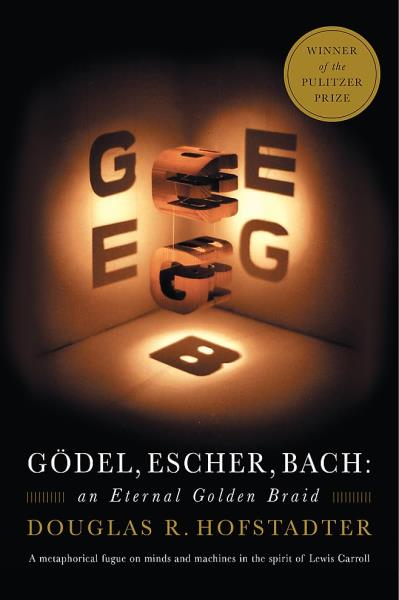
23
Watch.
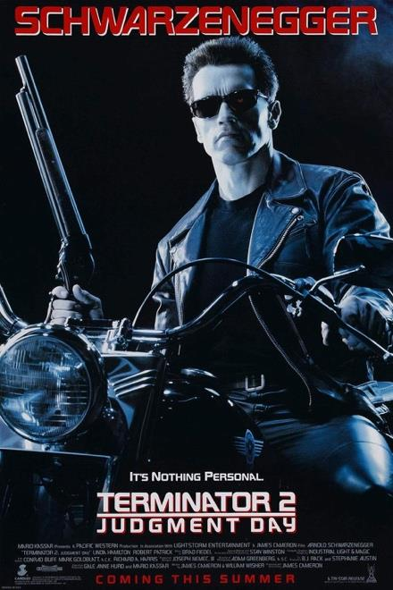
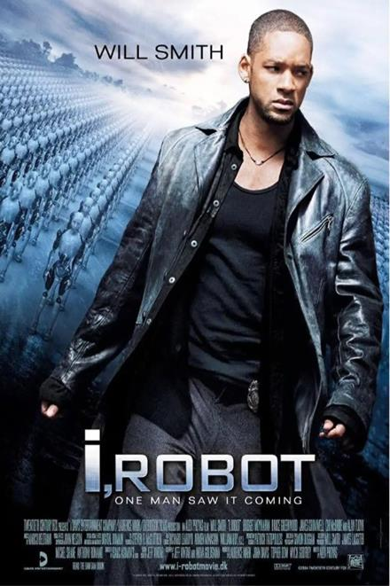
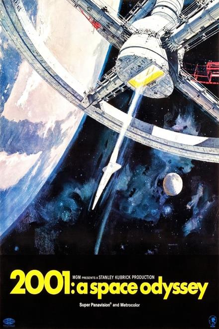
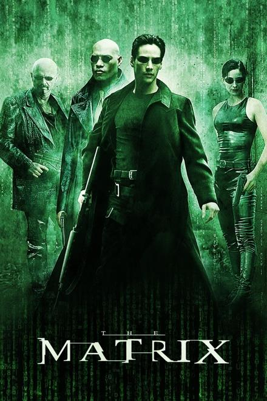
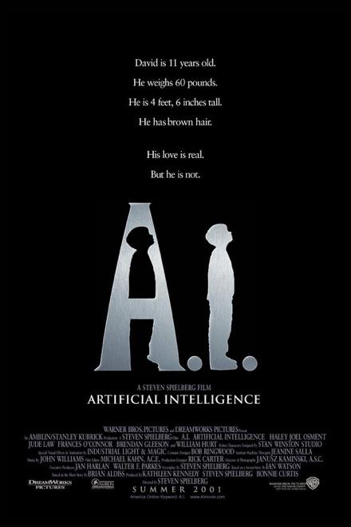
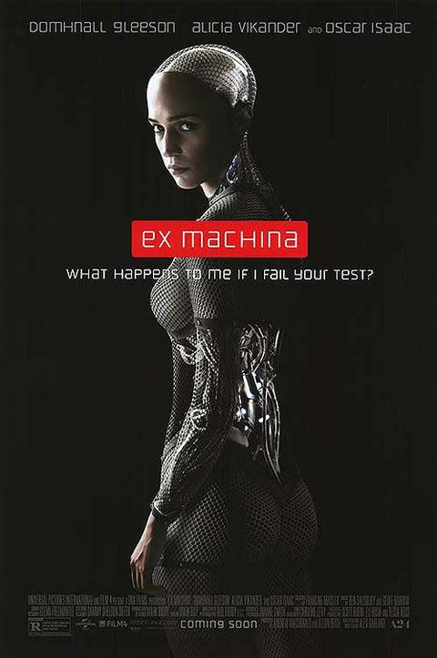
24
One more movie to watch
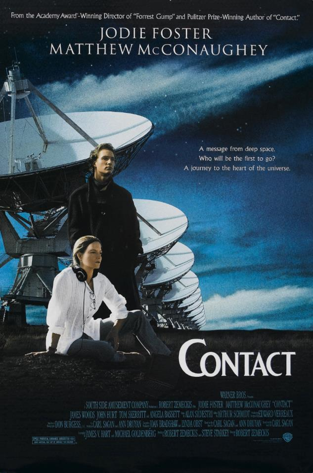
It’s not an AI movie but has uncanny parallels surrounding our contact with a certain kind of alien intelligence.